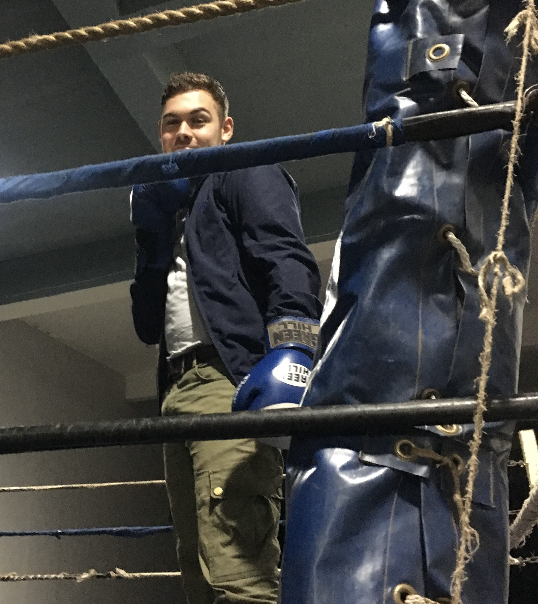

More about me
Welcome to the more about me section of my portfolio! Here I am sharing some more personal things
Volunteering in Malawi
After completing high school, I embarked on a transformative year-long journey to Malawi, serving as a volunteer development aid worker through a program funded by the German federal government. My primary role was that of a volunteer teacher, where I had the unique opportunity to instruct aspiring primary school teachers in information systems. This experience allowed me to contribute to their educational aspirations and offered me a profound insight into a different education system. Furthermore, I took on a pivotal role in developing systems that significantly bolstered the operational capabilities of a local NGO. These systems enhanced their commercial and fundraising activities, ensuring more sustainable community support and engagement.
Outside of my volunteer work, I seized every opportunity to explore the region. I travelled extensively through Malawi, Zambia, South Africa, and Tanzania using local public transport, which was an adventure in itself. These journeys allowed me to deeply immerse myself in the diverse cultures of each country and experience vastly different landscapes from the steppes in northern Tanzania to the rain forests in Malawi. One of the greatest adventures during my travels was riding the TAZARA railway line. Taking a decades-old train from Mbeya to Dar es Salaam, this journey was nothing short of epic. Riding through the vast, untouched wilderness and stopping in small remote communities to purchase supplies was humbling and exhilarating.
Throughout my year as a volunteer and a traveller, I met many people from all walks of life, significantly broadening my cultural horizons. This year was an adventure and a profound journey of personal and professional growth.
Hobbies

I've tried numerous hobbies over the years - including equestrian, rugby and field hockey -but none have resonated with me as much as boxing. It's the one activity I've found genuinely enjoyable – a perfect blend of exhilaration and discipline. What makes boxing so engaging is that it engages the body and the mind at the same time. While doing boxing drills, one needs to be extremely focused; otherwise, you might get punched in the face accidentally. Despite a common misconception, it's not merely about strength; the technical mastery required for each movement, from the precise footwork to the execution of each punch, offers a rich, rewarding complexity.
Furthermore, boxing offers a great workout that’s both challenging and enjoyable, improving fitness while providing a fun experience. That is the main reason why it has stayed with me for several years. This balance of enjoyment and physical rigour has solidified boxing as a hobby I'm passionate about and committed to continuing. However, I am also very open to trying other martial arts, if the opportunity presents itself. Having also tried karate, kung fu, and MMA, I think that every martial art brings something unique and interesting to the table. Trying out other martial arts is always exhilarating, looking at what skills I can transfer from boxing and learning what makes that martial art unique. I will definitely continue on this journey, even though boxing will remain my main focus.